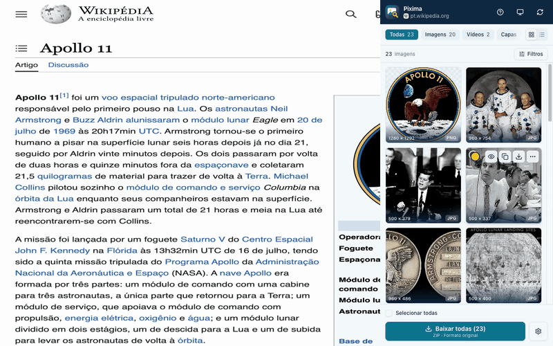
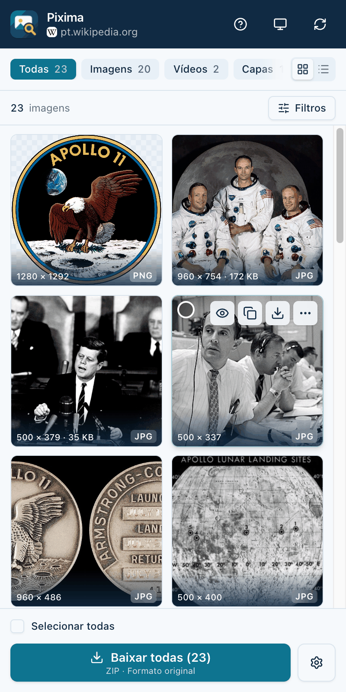
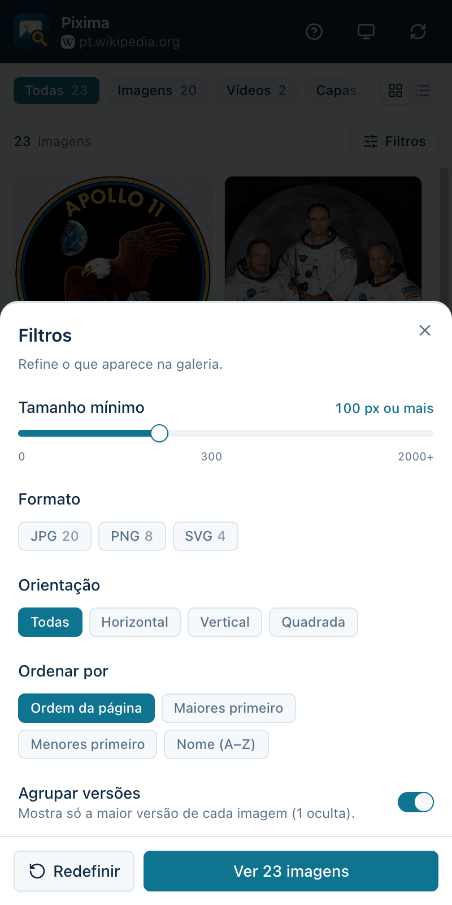
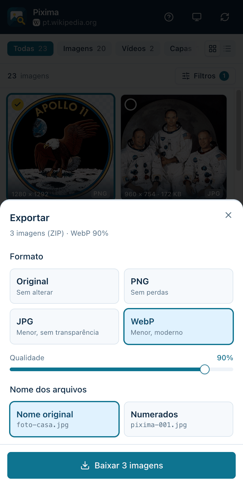
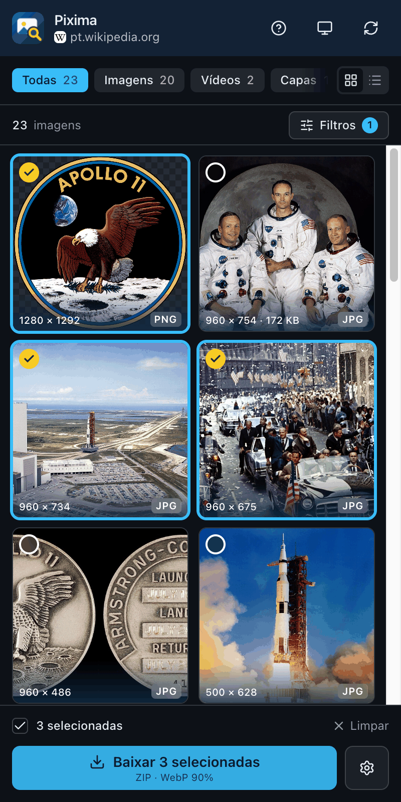

Acha tudo da página
Fotos, fundos, SVGs, capas de vídeo e até as imagens que o site só carrega depois.
O Pixima abre um painel ao lado da página e mostra tudo o que ela tem. Escolha o que quiser, converta para PNG, JPG ou WebP e baixe tudo em um ZIP.
Gratuito e de código aberto. Em breve na Chrome Web Store e no Firefox Add-ons; por enquanto, a instalação é pelo GitHub.

Em vez de clicar com o botão direito em cada foto, veja tudo de uma vez, já organizado.
Fotos, fundos, SVGs, capas de vídeo e até as imagens que o site só carrega depois.
Quando o site tem miniatura, tamanho médio e grande da mesma foto, o Pixima mostra só a maior.
Anúncios, rastreadores e itens de interface, como logos e ícones, ficam de fora da lista.
Filtre por tamanho, formato e orientação e ordene como preferir. Shift seleciona um intervalo.
PNG, JPG ou WebP, com a qualidade que você escolher. Baixe uma ou várias em um ZIP, com o nome original ou numeradas.
Sem conta e sem servidor. A busca, a conversão e o ZIP acontecem no seu navegador.
São três passos, e o Pixima mostra um tour rápido na primeira vez.
Tema claro, escuro ou automático, seguindo o seu sistema.




Capturas feitas na Wikipédia, no artigo sobre a Apollo 11, com imagens de domínio público da NASA. O texto da Wikipédia é licenciado sob CC BY-SA 4.0.
O Pixima não tem servidor nem conta. Ele só lê a página quando você abre o painel, e tudo o que faz com as imagens acontece no seu computador.
Ler a política de privacidadeNos baseados no Chromium, como Chrome, Edge e Brave, onde ele abre como painel lateral, e no Firefox, onde abre como barra lateral.
Sim. O Pixima é gratuito e de código aberto, com licença MIT.
Não. A busca, a conversão e a criação do ZIP acontecem no seu navegador. O Pixima não tem servidor, conta nem rastreamento.
Porque você pode abrir o Pixima em qualquer site, e ele precisa ler as imagens daquela página e baixar arquivos que ficam em outros endereços, como servidores de imagens. Ele só olha a página quando o painel está aberto.
O Pixima baixa o que o seu navegador consegue acessar, e nesse caso usa a sua sessão no site. Respeite os direitos autorais e os termos de cada site.
Ele ainda não está nas lojas. Por enquanto, a instalação é pelo GitHub, com o passo a passo no README.